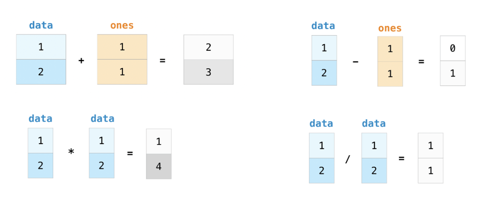
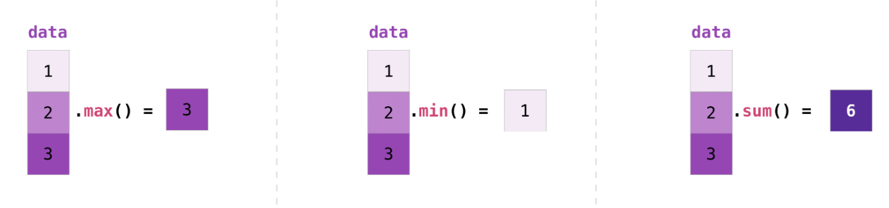

Vectorized Operations in NumPy: Beyond Python Loops
Objectives
By the end of this lecture, you will be able to:
Understand and implement vectorized operations to replace traditional Python loops
Apply broadcasting to perform operations between arrays of different shapes
Optimize calculations for working with large biological datasets
Instructor note
Teaching : 20 min
Demo: 20 min
Introduction to Vectorized Operations
What are Vectorized Operations?
Vectorized operations allow us to perform mathematical operations on entire arrays at once, rather than iterating through each element individually. This approach offers several key advantages:
Performance:
Vectorized operations are significantly faster than Python loops, especially for large datasets
Readability:
The code becomes more concise and often easier to understand
Efficiency:
NumPy uses optimized C code under the hood, making calculations much more efficient
The Speed Advantage: Loops vs. Vectorization
Let’s see a simple example comparing a traditional Python loop with NumPy’s vectorized approach:
Demo
import numpy as np
import time
# Create a large array for testing
size = 10000000
data = np.random.random(size)
# Method 1: Traditional Python loop
start_time = time.time()
result_loop = []
for value in data:
result_loop.append(value * 2 + 5)
loop_time = time.time() - start_time
print(f"Python loop time: {loop_time:.4f} seconds")
# Method 2: NumPy vectorized operation
start_time = time.time()
result_vectorized = data * 2 + 5
vector_time = time.time() - start_time
print(f"NumPy vectorized time: {vector_time:.4f} seconds")
# Calculate the speedup
speedup = loop_time / vector_time
print(f"Vectorized operations are {speedup:.1f}x faster!")
Output
Python loop time: 1.0195 seconds
NumPy vectorized time: 0.0613 seconds
Vectorized operations are 16.6x faster!
Basic Vectorized Operations in NumPy
Arithmetic Operations
NumPy enables element-wise arithmetic operations on arrays:

Demo
import numpy as np
# Create two arrays
a = np.array([1, 2, 3, 4, 5])
b = np.array([10, 20, 30, 40, 50])
# Element-wise operations
addition = a + b
subtraction = b - a
multiplication = a * b
division = b / a
print(f"Addition: {addition}")
print(f"Subtraction: {subtraction}")
print(f"Multiplication: {multiplication}")
print(f"Division: {division}")
Output
Addition: [11 22 33 44 55]
Subtraction: [ 9 18 27 36 45]
Multiplication: [ 10 40 90 160 250]
Division: [10. 10. 10. 10. 10.]
Scalar Operations
You can perform operations between arrays and scalars (single values):

Demo
# Scalar operations
a = np.array([1, 2, 3, 4, 5])
plus_10 = a + 10
times_2 = a * 2
square = a ** 2
reciprocal = 1 / a
print(f"Plus 10: {plus_10}")
print(f"Times 2: {times_2}")
print(f"Squared: {square}")
print(f"Reciprocal: {reciprocal}")
Output
Plus 10: [11 12 13 14 15]
Times 2: [ 2 4 6 8 10]
Squared: [ 1 4 9 16 25]
Reciprocal: [1. 0.5 0.33333333 0.25 0.2 ]
Comparison Operations
Comparison operations create boolean masks that can be useful for filtering data:
Demo
# Comparison operations
a = np.array([1, 2, 3, 4, 5])
greater_than_3 = a > 3
less_than_equal_to_2 = a <= 2
equal_to_3 = a == 3
print(f"a > 3: {greater_than_3}")
print(f"a <= 2: {less_than_equal_to_2}")
print(f"a == 3: {equal_to_3}")
# Using boolean masks for filtering
filtered_data = a[greater_than_3] # [4, 5]
print(f"Values greater than 3: {filtered_data}")
Output
a > 3: [False False False True True]
a <= 2: [ True True False False False]
a == 3: [False False True False False]
Values greater than 3: [4 5]
Universal Functions (ufuncs)
NumPy provides a wide range of universal functions (ufuncs) that operate element-wise on arrays:
Demo
# Universal functions (ufuncs)
a = np.array([1, 2, 3, 4, 5])
sqrt_values = np.sqrt(a) # Square root of each element
log_values = np.log(a) # Natural logarithm of each element
exp_values = np.exp(a) # e raised to the power of each element
sin_values = np.sin(a) # Sine of each element
print(f"Square roots: {sqrt_values}")
print(f"Natural logs: {log_values}")
print(f"Exponentials: {exp_values}")
print(f"Sine values: {sin_values}")
Output
Square roots: [1. 1.41421356 1.73205081 2. 2.23606798]
Natural logs: [0. 0.69314718 1.09861229 1.38629436 1.60943791]
Exponentials: [ 2.71828183 7.3890561 20.08553692 54.59815003 148.4131591 ]
Sine values: [ 0.84147098 0.90929743 0.14112001 -0.7568025 -0.95892427]
Aggregation Functions
NumPy also provides functions to calculate aggregate statistics across arrays: 
Demo
# Aggregation functions
a = np.array([1, 2, 3, 4, 5])
sum_a = np.sum(a) # Sum of all elements (15)
mean_a = np.mean(a) # Mean of all elements (3.0)
min_a = np.min(a) # Minimum value (1)
max_a = np.max(a) # Maximum value (5)
std_a = np.std(a) # Standard deviation (~1.41)
print(f"Sum: {sum_a}")
print(f"Mean: {mean_a}")
print(f"Min: {min_a}")
print(f"Max: {max_a}")
print(f"Standard deviation: {std_a}")
Output
Sum: 15
Mean: 3.0
Min: 1
Max: 5
Standard deviation: 1.4142
Use NumPy’s Built-in Functions: They’re optimized for performance
Exercise
import numpy as np
import time
# Create a large array
size = 1_000_000
data = np.random.random(size)
# Method 1: Custom function with a loop
def mean_std_loop(arr):
mean = sum(arr) / len(arr)
squared_diff_sum = sum((x - mean) ** 2 for x in arr)
std = (squared_diff_sum / len(arr)) ** 0.5
return mean, std
# Method 2: NumPy's built-in functions
def mean_std_numpy(arr):
return np.mean(arr), np.std(arr)
# Time the loop version
start = time.time()
mean1, std1 = mean_std_loop(data)
time1 = time.time() - start
# Time the NumPy version
start = time.time()
mean2, std2 = mean_std_numpy(data)
time2 = time.time() - start
print(f"Loop implementation: {time1:.6f} seconds")
print(f"NumPy implementation: {time2:.6f} seconds")
print(f"Speed improvement: {time1/time2:.1f}x")
Solution
Output
Loop implementation: 0.156354 seconds
NumPy implementation: 0.002557 seconds
Speed improvement: 61.1x
3. Broadcasting in NumPy
What is Broadcasting?
Broadcasting is a powerful mechanism that allows NumPy to perform operations on arrays of different shapes. It automatically “broadcasts” the smaller array across the larger array so that they have compatible shapes.

Broadcasting Rules
If the arrays don’t have the same number of dimensions, the shape of the smaller array is padded with ones on the left
If the shape of the arrays doesn’t match in any dimension, the array with shape equal to 1 in that dimension is stretched to match the other shape
If in any dimension the sizes disagree and neither is equal to 1, an error is raised
Broadcasting Examples
Example 1: Adding a scalar to an array
The simplest form of broadcasting:
Demo
# Adding a scalar to an array
a = np.array([1, 2, 3, 4, 5])
result = a + 10 # Scalar 10 is broadcast to array [10, 10, 10, 10, 10]
print(result) # [11, 12, 13, 14, 15]
Note
If the sizes along a dimension differ, the array with size 1 in that dimension is stretched to match the other size
Example 2: Operations between a 1D array and a 2D array
Demo
# Broadcasting with different dimensional arrays
# Create a 2D array (3x3)
matrix = np.array([
[1, 2, 3],
[4, 5, 6],
[7, 8, 9]
])
# Create a 1D array
row_vector = np.array([10, 20, 30])
result = matrix + row_vector
# Broadcasting: Add the 1D array to each row of the 2D array
# row_vector is broadcast to match matrix's shape
# NumPy's default broadcasting for 1D arrays applies column-wise
print("Original matrix:")
print(matrix)
print("\nRow vector:")
print(row_vector)
print("\nResult after broadcasting addition:")
print(result)
# Output:
# [[11, 22, 33],
# [14, 25, 36],
# [17, 28, 39]]
Note
Row_vector is duplicated across the rows of the matrix
More info
Additional info
Example 3: Adding a column vector to a 2D array
Demo
# Create a column vector (3x1)
column_vector = np.array([[100], [200], [300]])
# Broadcasting: Add the column vector to each column of the matrix
result = matrix + column_vector
print("Original matrix:")
print(matrix)
print("\nColumn vector:")
print(column_vector)
print("\nResult after broadcasting addition:")
print(result)
# Output:
# [[101, 102, 103],
# [204, 205, 206],
# [307, 308, 309]]
Note
column_vector is effectively repeated across all columns, resulting in:
[[100, 100, 100],
[200, 200, 200],
[300, 300, 300]]
Array Splitting with NumPy
Splitting arrays is a common operation when working with biological data, especially when you need to separate data into training and testing sets or divide data by conditions.
Basic Array Splitting
The np.split function allows you to divide an array into multiple sub-arrays:
Demo
import numpy as np
# Create a simple array
arr = np.arange(10)
print(f"Original array: {arr}")
# Split into 5 equal parts
splits = np.split(arr, 5)
print("After splitting into 5 equal parts:")
for i, split in enumerate(splits):
print(f"Split {i}: {split}")
Output
Original array: [0 1 2 3 4 5 6 7 8 9]
After splitting into 5 equal parts:
Split 0: [0 1]
Split 1: [2 3]
Split 2: [4 5]
Split 3: [6 7]
Split 4: [8 9]
More info
Additional info
Splitting 2D Arrays:
You can split arrays along different axes:
Demo
# Create a 4x4 array
arr_2d = np.arange(16).reshape(4, 4)
print("Original 2D array:")
print(arr_2d)
# Split along rows (axis=0)
row_splits = np.split(arr_2d, 2, axis=0)
print("\nSplit along rows (axis=0):")
for i, split in enumerate(row_splits):
print(f"Split {i}:")
print(split)
# Split along columns (axis=1)
col_splits = np.split(arr_2d, 2, axis=1)
print("\nSplit along columns (axis=1):")
for i, split in enumerate(col_splits):
print(f"Split {i}:")
print(split)
Output
Original 2D array:
[[ 0 1 2 3]
[ 4 5 6 7]
[ 8 9 10 11]
[12 13 14 15]]
Split along rows (axis=0):
Split 0:
[[0 1 2 3]
[4 5 6 7]]
Split 1:
[[ 8 9 10 11]
[12 13 14 15]]
Split along columns (axis=1):
Split 0:
[[ 0 1]
[ 4 5]
[ 8 9]
[12 13]]
Split 1:
[[ 2 3]
[ 6 7]
[10 11]
[14 15]]
Splitting at Specific Indices
You can also split an array at specific indices:
Demo
# Create an array
arr = np.arange(10)
print(f"Original array: {arr}")
# Split at indices 2 and 7
splits = np.split(arr, [2, 7])
print("\nAfter splitting at indices [2, 7]:")
for i, split in enumerate(splits):
print(f"Split {i}: {split}")
Output
Original array: [0 1 2 3 4 5 6 7 8 9]
After splitting at indices [2, 7]:
Split 0: [0 1]
Split 1: [2 3 4 5 6]
Split 2: [7 8 9]
Application: Train-Test Split in machine learning
More info
Additional info
Avoiding Common Mistakes:
Copying vs. Viewing: Be aware of when you’re creating a view versus a copy
Demo
# Creating a view - changes to 'view' will affect 'original'
original = np.array([1, 2, 3, 4, 5])
view = original[1:4]
view[0] = 99
print(f"Original after modifying view: {original}") # [1, 99, 3, 4, 5]
# Creating a copy - changes to 'copy' won't affect 'original'
original = np.array([1, 2, 3, 4, 5])
copy = original[1:4].copy()
copy[0] = 99
print(f"Original after modifying copy: {original}") # [1, 2, 3, 4, 5]
Broadcasting Dimensions: Be careful with dimensions when broadcasting
Demo
# This works as expected
a = np.array([[1, 2, 3], [4, 5, 6]]) # 2x3
b = np.array([10, 20, 30]) # 1D with 3 elements
result = a + b
print(result)
# This will fail because dimensions don't align properly
try:
c = np.array([10, 20]) # 1D with 2 elements
result = a + c
except ValueError as e:
print(f"Error: {e}")
Best Practices
Avoid Python Loops when working with numerical data; use vectorized operations instead
Use Broadcasting wisely to make your code concise and efficient
Pre-allocate Arrays when you know their size in advance
Leverage NumPy’s Built-in Functions for optimal performance
Be Mindful of Memory Usage when working with large biological datasets
Vectorized operations in NumPy are a powerful tool for data analysis in computational biology. By replacing traditional loops with vectorized operations, you can significantly improve the performance and readability of your code, making it easier to work with large biological datasets.
Key Takeaways
Keypoints
Vectorized Operations are much faster than Python loops for numerical computations
Broadcasting allows operations between arrays of different shapes
NumPy’s Universal Functions provide efficient implementations of common mathematical operations
Array Splitting is useful for dividing data for analysis and machine learning